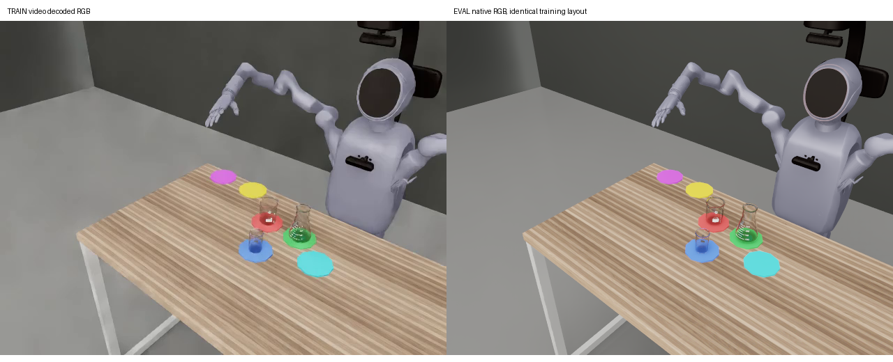

更新：2026-11-03 14:32 UTC。以下为诊断，均不计正式成功率。正式阶段 A/B 未启动。
task5-all、task5-grasp-attach、task5-ours-aligned-weak（#17）三个旧矩阵已冻结后续派发及自动恢复。原三个4卡低优任务job-dut7ayxloig3、job-bil1xyz5cbr4、job-qc8mx9m974a5均取消并核验副本终态，释放12卡。历史验收7023条（原始3285、附着3283、#17 455），全程成功均为0；标为“阶段 A 部分完成、全0；管线待查，不计正式成绩”。原21000条目标已被新协议取代。
目前五任务低优占卡4，上限4卡。最近任务job-pxc1bd2npq4r已完成20条，四卡释放已核验；该任务只做new30、h8、推理seed0的20条准入冒烟，正反各10。N1×5多进程并行，每个Isaac进程实际1环境；四个固定训练场景的0/50帧先与N1×1比较，四卡全部MAE≤1.0/255才启动闭环。当前收齐4/4卡图像门槛；已独立核验冒烟20/20。未完成只报进度。当前阶段记录：冒烟完成，等待准入结论。
12:39 UTC采样GPU利用率34–76%，显存约43–48GB/98GB；CPU约76/80核配额，已接近主机配额，不继续堆进程。此前单卡连续图像拟合采样GPU利用率96%，全部12项结束并核对自有子进程清理。采样值不冒充全程平均，也未宣称显存或GPU已满载。
100/100条pos1cm源episode核实：初始化RENDER_QUALITY_ADMISSION记DLD=False，随后native51_dld_episode1613在整个视频期间覆盖为True，视频关闭后才恢复False。源数据还启用fractionalCutoutOpacity=True。旧评测只复用了初始化记录，漏掉这两项运行时覆盖。
还漏掉了采集端renderer_camera_audit.install：附加CameraParams并渲染24次，从实际投影计算K，调用set_intrinsic_matrices(..., focal_length=1.0)，再渲染24次并验证投影与位姿。新适配器恢复整条原始初始化链、源viewport和chest前移23mm设置；任务输入仍为第三人称。安装前后关节和物体位姿逐值相同，原物理参数、动作和验收器不变。不能把完整链的效果独立归因于某个内部渲染机制。
固定q13、指令、历史和随机数，仅换图像：weak30相对标签的动作全13维RMSE，训练图0.01989rad，旧评测图0.13397rad，恢复源光学链后0.01701rad。重复输入与返回训练图的动作位相同。这确认了实际输入不一致及其动作影响；尚不能证明全部闭环失败均由它导致。
私有适配代码：/home/liyufeng/ops/safelab_5b_stable_attach_20261101/eval_v1_pipeline_20261103/pos1cm_source_optics_v1.py。版本pos1cm_source_optics_v1，必须显式选择且只用于已核对的pos1cm配置，不推广到fixed或其他任务。
恢复源光学链后，训练episode 0/2正向、1/3反向，原120Hz目标及current_row的15Hz线性插值两种回放，**8/8通过原五阶段物理验收**。完整逐tick JSONL已归档。回放不是模型成功。
每条在0/25/50/75/100%并额外第50帧比较训练H264解码RGB，MAE为1.56–2.02/255；旧光学链为2.57–3.43/255。相机投影、物体布局和观测同步均核验。源默认H264编解码的静态参考误差约1.69/255，说明压缩有贡献；此静态参考不是逐帧GOP重建，也不能证明剩余差异全部来自编码。未对模型输入做H264再编码或模糊。
以下历史对照图使用修正前评测RGB，仅作根因证据：

6种pos1cm权重各测两条360帧训练前缀。固定真实q13、指令、历史与推理随机数，将训练视频RGB替换成修正后的原生回放RGB，比较时间集成动作全13维RMSE（弧度）。全部12项完成，比例0.77–1.35，未出现旧首帧输入造成的误差陡增。此检查只覆盖第一子任务前缀，不能替代全任务闭环或直接等同训练流匹配loss。
| 模型 | episode | 训练RGB RMSE | 修正Native RGB RMSE | 比例 |
|---|---|---|---|---|
| new20 | 0 | 0.03729 | 0.04009 | 1.075 |
| new20 | 1 | 0.02826 | 0.03033 | 1.073 |
| new30 | 0 | 0.02551 | 0.03063 | 1.201 |
| new30 | 1 | 0.01961 | 0.02315 | 1.181 |
| weak20 | 0 | 0.03716 | 0.04741 | 1.276 |
| weak20 | 1 | 0.02947 | 0.03561 | 1.208 |
| weak30 | 0 | 0.02365 | 0.03198 | 1.352 |
| weak30 | 1 | 0.02386 | 0.0244 | 1.022 |
| ours30 | 0 | 0.02699 | 0.02792 | 1.035 |
| ours30 | 1 | 0.02836 | 0.02189 | 0.772 |
| oursalignedweak30 | 0 | 0.02402 | 0.02818 | 1.173 |
| oursalignedweak30 | 1 | 0.02046 | 0.02669 | 1.305 |
另做官方SDK eager与实际服务serial_exact+CUDA graph的固定输入对照：两个独立seed0 lane，交错派发96帧，各12个30×13动作chunk，24组动作逐值相同（最大差0）。这排除了此样本上服务优化和lane顺序改变动作的嫌疑；不代替完整48条独立执行器后端物理准入。
训练日志已读取weak/ours末段action_loss，数值有限、约0.0008–0.0082；它是训练目标的MSE，不与反归一化关节RMSE直接相等。官方Mem-0最终训练日志仍在核对，先前的3步smoke及早期loss不能冒充30k收敛证据；正式放量前仍需补齐训练目标量级的核验。
更早的14项自身训练输入检查包含fixed30和上述6种权重，pos1cm没有普遍差于fixed。动作对齐current_row、状态lerobot_v21_state13、各权重自己的pos1cm统计文件及SHA均核实；没有套用三任务interval_end或fixed统计。模型输入使用训练张量双线性Resize+抗锯齿224，再走冻结Qwen处理器。数据缓存虽名head_camera，元数据实际映射第三人称，前两episode视频及整条q/action已与发布数据核对。7个物理步RGB滞后修复实际生效。
已再次核对交付文档：current_row标签L_f对应曝光T_f后立即下发的T_f+1目标。当前旧控制器使用previous + (L_f - previous) × substep/8，直到T_f+8才到L_f。标签元数据与归一化正确，不代表这一控制时序已经对齐。
既有8/8专家回放说明旧插值可完成这些场景，不能消除上述时间差。现仅在已有Pro的GPU0、最多两个独立N1进程，做6组录制动作诊断：2条旧插值复现，加正反各2条候选回放。候选在T_f+1直接落到L_f，之后向下一15Hz标签L_(f+1)插值；保留3.14速度上限、原始物理与五阶段验收。候选只用已预测的下一标签，未加入未来传感器信息。此时尚未修改模型闭环基线，也未派发新全量评测。
将逐物理步检查实际位置目标，比较训练关节轨迹误差、五阶段验收和多进度RGB。该差异的存在可由代码与标签定义确认，它对闭环成功率的影响尚待配对验证；不能提前称为全部0成功的根因。
六组完整回放现已全部通过原五阶段验收（2组旧版复现、4组新候选）。新候选每个下一物理步标签误差均为0；正向/反向配对的手臂轨迹RMSE从旧版0.01206/0.01214rad降至0.0000688/0.0000204rad，另外两个新候选为0.0000103/0.0000118rad。多进度图像MAE范围1.568–1.932/255。全部原生回放子进程已核对退出。
已提交相同20场景、new30、seed0、h8的闭环配对，控制版本current_row_forward_linear_v1；模型、源光学链、图像预处理、场景与验收器保持原样。任务job-6t719gml4wnj，当前独立核验0/20；只显示进度，不提前填写成功率。每tick额外独立复核真实PhysX位置/速度目标。N1×5沿用先前同任务、同模型与渲染代码的4场景0/50帧准入，k未提高。正式A/B仍暂停。
官方new30对自身训练episode 0/1完整第一子任务检查，分别428/504帧，覆盖之前360帧检查遗漏的末段。FFmpeg双线性解码与既有PyAV训练输入的前360帧逐像素相同。原生分类器从419/495帧开始报阳性，恰为各自最后9帧；专家物理放置验收约在368/436帧，未见这两条GT轨迹上分类器提前于物理完成的情况。
直接重算冻结head.forward的归一化动作速度MSE，均值0.000771/0.000994；使用SDK参数精度、真实Beta时刻/噪声及有效bool动作mask，固定GT轨迹、无颜色增强。这是同公式的小样本重算，不等于最终训练日志的整批平均loss；官方末段日志仍待训练负责提供。
下表只比较真正要执行的前8步，单位弧度。两条第一子任务及同随机数下，原始chunk与原生时间均值集成分别对齐同一标签，改变的仅是选择方式，没有闭环成功率。
| 训练episode | 范围 | 原始预测arm7 RMSE | 时间集成arm7 RMSE |
|---|---|---|---|
| 0 正向 | 完整首子任务 | 0.01536 | 0.01956 |
| 0 正向 | 360帧后末段 | 0.01235 | 0.01136 |
| 1 反向 | 完整首子任务 | 0.01669 | 0.03224 |
| 1 反向 | 360帧后末段 | 0.02227 | 0.05797 |
反向末段此前报告的0.102rad是完整30步预测窗口指标；实际执行前8步为0.058rad。较大误差还覆盖放置后的手臂回撤，不能由此单独解释抓取失败。结果显示时间集成会放大部分动态段误差，正向末段则略有改善；没有据此修改基线算法或宣称找到全部失败根因。已完成的24组eager/服务图对照仍逐值相同，说明这项差异来自原生输出选择，不是服务优化另改了动作。
最新按协议推理seed0另做相同GT对照，结果单独归档，避免把既有729000/729001参考噪声与正式seed0混为一谈。完整复查自有进程已退出；当前seed0短诊断仅使用既有Pro的GPU0，不增加低优卡。
| 范围 | 当前进度 | 正式成绩 |
|---|---|---|
| new30 h8 准入冒烟，seed0 | 20/20独立核验，4卡图像准入4/4 | 诊断单列，不计正式 |
| 正式阶段A，baseline h4/h8 | 尚未启动 | 不显示成功率 |
| 正式阶段B，5 seeds | 尚未启动 | 不显示成功率 |
| 新版附着阶段A | 等待原始条件A完成 | 不显示成功率 |
20条h8冒烟已独立核验完毕：**0/20全程成功，unknown=0，Wilson95%区间0–16.11%（仅此诊断样本）**；阶段0/1/2分布17/1/2，平均0.25阶段。正向0/10，阶段分布7/1/2、平均0.5；反向0/10，10条均阶段0。原物理失败：10条碰倒物体、10条达到240秒上限。85%阶段0没有触发90%停止线，但仅代表此停止规则未触发，不等于全部四项准入通过。正式阶段A/B仍暂停，补查完整第一子任务末段和实际训练目标量级。总墙钟约41分钟（含N1×1/N1×5图像预检与冷启动）。通过后才按模型准入恢复阶段A：推理seed0、h4/h8、同100个场景正反各50交错。场景列表SHA256：3319756ffd58df6b94117d5a74cb106ecb3245c0f7a575b8638127c55d2d7019。阶段A≥3/100或主对比表最佳配置才扩阶段B；A为0/100不补seed，以平均完成阶段汇报。不新增h30，附着单独版本、在原始A后执行。原验收门槛与240秒物理上限不变，stall_timeout未启用。
下表为原矩阵第一轮，保留原噪声种子定义，不冒充新版固定推理seed0。历史全程成功均为0。new30 h4停阶段0为94/100，修正“全部95–100%”的概括。
| 模型 | 步数 | 历史已验收n | 停阶段0 | 平均完成阶段数 |
|---|---|---|---|---|
| old30 | 4 | 100 | 32 | 1.25 |
| old30 | 8 | 100 | 39 | 1.06 |
| new20 | 4 | 100 | 95 | 0.05 |
| new20 | 8 | 100 | 95 | 0.05 |
| new30 | 4 | 100 | 94 | 0.06 |
| new30 | 8 | 100 | 97 | 0.03 |
| weak20 | 4 | 100 | 100 | 0.0 |
| weak20 | 8 | 100 | 100 | 0.0 |
| weak30 | 4 | 100 | 100 | 0.0 |
| weak30 | 8 | 100 | 100 | 0.0 |
| ours30 | 4 | 100 | 100 | 0.0 |
| ours30 | 8 | 100 | 99 | 0.01 |
| oursalignedweak30 | 4 | 47 | 46 | 0.0213 |
| oursalignedweak30 | 8 | 48 | 48 | 0.0 |
追加修正后闭环追踪（诊断）：new30正向case014先经原物理验收通过阶段1（tick3189）、阶段2（tick6972），模型分别在tick3584/7400才切到下一指令；之后目标C倾倒超过原门槛而失败。reverse case013始终为第一指令，非目标B被碰倒。两例原始物理与模型日志均已独立复核，不支持把这两次失败归为统一完成判定未触发，也未据此修改判定。
五段阶段0视频分别见放置偏移3.27cm超过2.5cm门槛、碰倒非目标物、抓空、提起后偏离目标垫、未抓起。首条指令正确，手臂均在运动；没有支持统一放宽完成判定的证据。
[接入说明](task5-policy-process-backend-v1.md)。固定输入完整策略吞吐提升1.55–1.56倍，动作与语义等价。48条物理试批因共享主机内存保护结束：12条闭环、4条中断、32条未派发；12条闭环不等于已完成12条独立验收。自有进程清理通过，其他进程保留。后端未通过48条物理放量验证，未切换正式运行；基础设施中断不记模型失败。
已于10:36 UTC提前收尾、取消并核实释放job-06qcoz6znhe8，未占用到4小时期限。N1×5完成配对8条3305.16秒；N4×2在3239.66秒仍未完成，即便此刻8条全完成，吞吐相对N1上界仅1.0202倍，不可能达到1.3倍门槛，故停止。
420帧3360物理tick回放中，N4实际PhysX位置和速度目标与N1位相同；实际关节最大差0.00209rad，不能称物理轨迹逐tick相同。第0/50帧图像差0.35–0.39/255。邻居灯光0→4倍图像差0.030–0.038，但私有渲染代理未复制动态灯光，缺少光照进入渲染的正对照，未认定通过完整灯光测试。
该轮归档遗漏闭环逐tick JSONL，无法独立复核吞吐样本完整物理日志；上述只能叫完成吞吐，不能叫合格轨迹/GPU小时。未来归档器已补JSONL、互斥和线程收尾并通过临时目录检查。当前N4每个物理进程另开4个私有渲染代理且逐lane推理，是此实现的成本，结论不外推所有N4。正式评测继续使用N1×k多进程并行。
## 启动失败记录（不计模型失败）
时序修正诊断v2/v3在加载模型前被新增硬件名称检查拦下，均未产生模型轨迹，副本终态与释放已核验。实际GPU显示NVIDIA RPBZZZ6、97887MiB，与此前成功专家回放job-hvrb6wsqcfga的四卡原始清单完全相同。原检查把商业名称硬编码为PRO6000，属于启动器错误。新v4按已验收原始硬件清单匹配，保留恰好4卡及显存约束；真实失败快照正对照和卡数/名称/显存错误的4组负对照均通过。旧失败启动不算40条模型失败，不写入模型成功率。